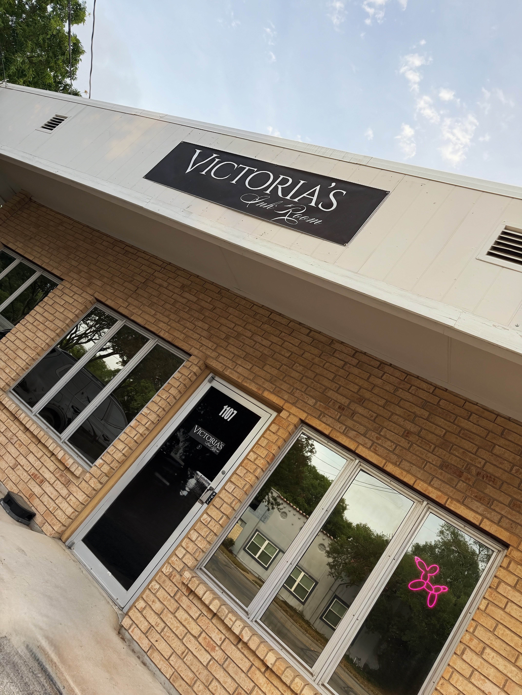
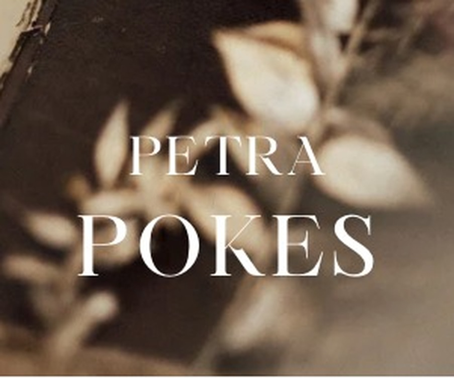
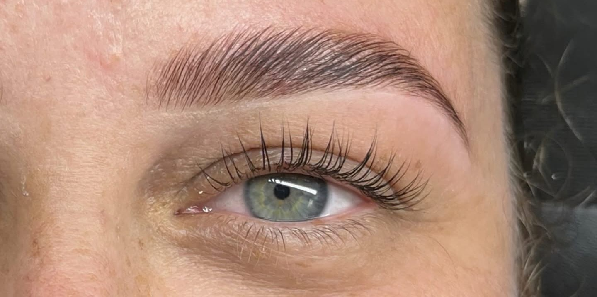
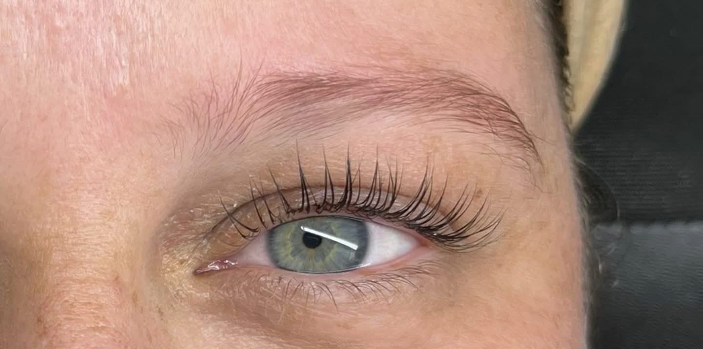
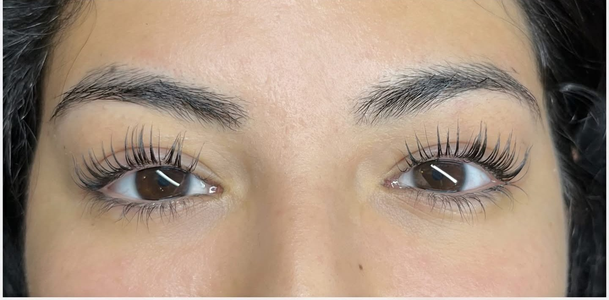
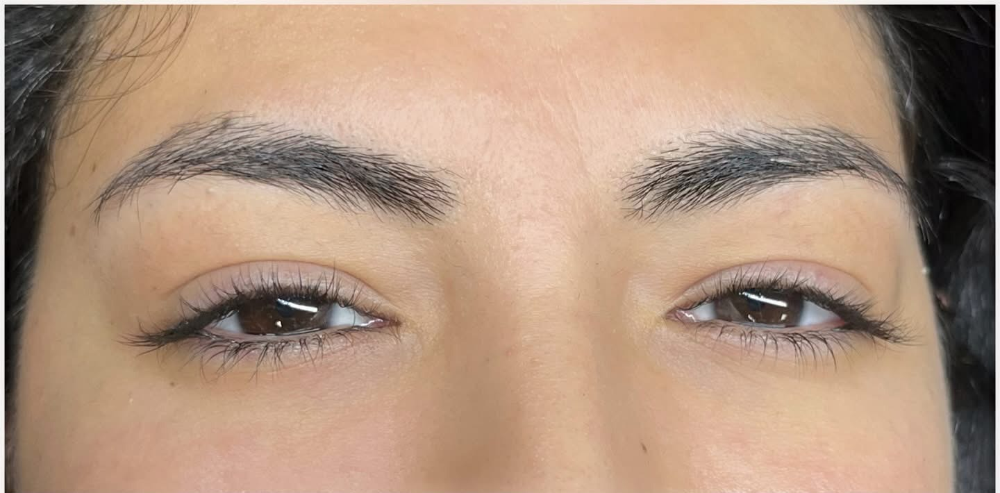

1107 N Austin · Seguin
Victoria’sInk Room.
Tatuajes, cejas, pestañas y maquillaje permanente en N Austin. Tres sillas de artista. Llame para agendar.

Seguin1107 N Austin St
Lun–Vie 9–5Cerrado sábado y domingo
TatuajesTres sillas de artista
Cejas y pestañasAsí lo tiene en Google
Artistas
Tres sillas.
Las flechas pasan el trabajo de cada silla. Nicki es la artista 1. Petra es la artista 2. La artista 3 es un asiento del estudio.

El trabajo
Del estudio.
Piezas terminadas de la artista 1. El set completo está en el portafolio de Nicki.
{kind=link}
{kind=link}
{kind=link}
{kind=link}
{kind=link}
{kind=link}
Servicios
Cejas y pestañas.
Llame al (830) 318-3153. Lunes a viernes, 9 a 5.


Antes DespuésCejas
- Laminado de cejas
- Embellecimiento de cejas
- Diseño de cejas
- Microblading
- Maquillaje permanente


Antes DespuésVisítanos
1107 N Austin.
Seguin, Texas. Llame para agendar.
- Dirección1107 N Austin St
Seguin, TX 78155 - Teléfono(830) 318-3153
- HorarioLun–Vie 9 AM–5 PM
Sábado cerrado · Domingo cerrado